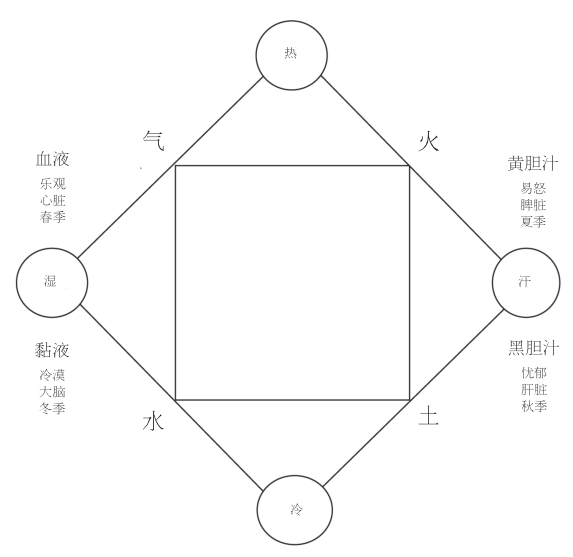
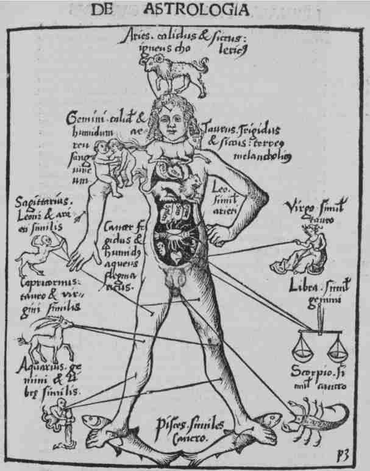
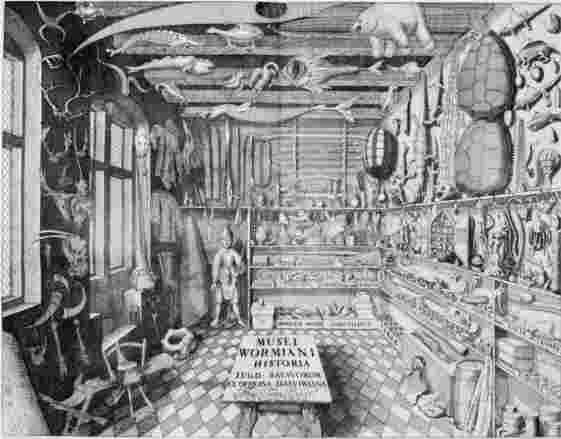

除了月上世界和月下世界，还有第三个世界引起了近代思想家的注意，那就是人体这个“小宇宙 ”或“小世界”。近代早期的医生、解剖学家、化学家、机械论者等等都密切关注我们所寄身的这个生命世界。他们探索其隐秘的结构，力图理解其功能，希望找到新的健康之道。人体的生命活力自然将人与地球上的其他生命——植物和动物——联系起来。在科学革命时期，这些生物的名录在激增，这不仅要归因于探险航行，也是因为显微镜被发明出来。显微镜揭示了平凡之物背后人们从未想到的复杂世界以及一滴水中所包含的新生命世界。
医学
人体是医生的首要关注对象，在整个中世纪盛期和近代早期，医学一直具有很高的社会地位和学术威望。医学院连同法学院和神学院构成了大学中的三个高等学院。1500年左右大学所传授的医学知识，是中世纪的阿拉伯人和拉丁人经验的累积，和以古希腊罗马的医学学说为基础所作的创新。盖伦、希波克拉底、伊本·西纳（又称阿维森纳，约980—1037）是主要权威，体液理论是这些医学知识的基础。体液理论主张，身体健康不仅需要各种器官正常运作，还需要体内四种体液的平衡。它们分别是血液、黏液、黄胆汁和黑胆汁，其相对比例决定了人的气质 。四体液与亚里士多德的四元素相对应，遵循着后者的原初性质配对（图13）。
医生的职能是帮助重新建立体液平衡，这可以通过规定特种饮食、日常养生法和药物来实现。这种以盖伦学说为主导的医学使用的是“对抗疗法”，也就是说，如果病人由于体内黏液（冷和湿的体液）过多而引发了“感冒”（cold，我们今天仍然沿用了盖伦医学对它的称谓），那么他可以服用热和干的食物和药物来帮助恢复体液平衡。发烧的病人则需要冷和湿的药物，洗冷水澡，或者通过放血疗法来排出多余的血液及其热性。

图13 “元素正方形”，显示了四元素的性质及其与四体液、四体质和四季的关系。
人们认为，月上世界与人体之间存在着许多关系，这充分表明了近代早期世界的关联性。大宇宙对小宇宙的影响基本上未被质疑，尽管这种相互作用的细节始终是有争议的。于是，占星学在诊断和治疗中发挥了关键作用，占星学的主要应用可能是医学而不是预测。每一个身体器官都对应着黄道上的一个宫，特别容易受到那颗在性质上与之相似的行星的影响（图14）。
例如，大脑是一个冷而湿的器官，它受月亮——一颗冷而湿的行星——的影响最大。［因此，大脑失常的人今天依然被称为lunatic（精神失常）——来自拉丁词luna（月亮）——或者更通俗地说是moony（发狂的）］。了解疾病发作时的行星位置有助于医生认识主要的环境影响，或者确认受到潜在影响的身体器官，从而作出诊断。不仅如此，每个人的体液都有一种独特的比例——被称为他的“体质 ”，这取决于人出生时占主导地位的行星影响。这意味着每个病人都必须恢复其特有的体质。
近代早期医学中没有整齐划一的治疗。治疗必须因人而异，同一种药物不会适用于所有人，特定的饮食和养生法也要与治疗并行。因此，为了弄清楚病人的体质，医生也许会考察病人的命盘。依据希波克拉底提出的“危险期”思想，在疾病的发展过程中存在着一些“危机”点，病人要想康复必须成功战胜它们，因而占星学计算可能同样有助于安排治疗时间。诊断也依赖于尿液检查，便携的参考图列出了一览表，显示了病人尿液的颜色、气味、浓度甚至是味道以及这些指标与不同疾病的关系。脉搏的快慢、节奏和强度也是如此。

图14 该图显示了人体器官及其与黄道各宫的对应。源自近代早期的一部百科全书，格雷戈尔·赖因施编，《哲学珠玑》（弗赖堡，1503）。
在科学革命时期，医疗方法至少在执业医师那里并未发生显著改变。虽然在新的观念和发现的影响下有缓慢发展，但以盖伦和希波克拉底为核心的医学传统一直延续到18世纪（尽管占星学诊断在17世纪就已开始衰落）。这一延续既反映出医学院课程的稳定性，也反映出了医学行会或医学职业认证机构的保守态度。于是，创新往往来自于非执业医师。然而，严格的医生职业许可仅限于那些大的城市中心。在大多数地方，维护人们健康的都是未受过或只受过些许正规医学教育的各类治疗师，其数量远远超过执业医师。几乎家家都为自己或邻居备着一系列家用医疗药品。药剂师使单方药和成药变得唾手可得，以至于几乎所有人都可以合成奇异药物（此举有时很危险）。手术一般由外科理发师（barber-surgeon）来做，与一般的外科医生相比，他们的地位较低，所受教育也不够正规。“江湖医生”（即提供各类药物和治疗的无照医生）发现还是城市中的生意最好做，虽然伦敦、巴黎和其他大城市经常禁止他们行医。与现代医疗迥异的是，有些治疗需要签订合同，换言之，医生的报酬依赖于治疗效果。
非执业医师对全新的医学研究方法（比如帕拉塞尔苏斯理论和17世纪的海尔蒙特理论）表现得更加热情，这往往对现有的医学体系构成了直接挑战。不过，医学中新的化学方法缓慢而持续地进入了官方药典和专业机构（如1518年成立的伦敦皇家医师学院）的医疗活动中。在法国，保守的巴黎医学院支持盖伦的医学，而蒙彼利埃医学院则支持帕拉塞尔苏斯的医学，两者针对化学药物的风险和回报展开了长达数十年的争论。这一冲突也反映了皇家的、集权的和占主导地位的巴黎天主教徒与外省的、新教徒为主的蒙彼利埃人之间的分歧。他们最激烈的争论涉及锑这种有毒矿物的医学用途，这场争论直到1658年才结束。当时路易十四在一次战役中病倒了，皇家医生的传统治疗不起作用，当地医生用含锑的酒使路易十四呕吐而治好了他的病。此后巴黎医学院不得不投票肯定了帕拉塞尔苏斯派使用“催吐药酒”的正当性。
解剖学
解剖学在近代早期取得了重大进展。尽管盖伦强调解剖学在古代的重要性，但罗马人认为解剖对尸体造成的冒犯在社会和道德上都是不可接受的，于是盖伦只能对猿和狗进行解剖，并将其发现类比于人体。（不过在担任角斗士医生期间，他无疑经常能够看到暴露的人体内脏。）在古代，只有埃及允许人体解剖，这可能是因为制作木乃伊需要经常开膛破肚、切除器官。然而在中世纪晚期，人体解剖在帕多瓦和博洛尼亚等意大利大学的医学院已被普遍接受。到了1300年左右，作为教学的一部分，医科学生必须观察人体解剖。认为天主教会禁止人体解剖不过是19世纪的一则毫无依据的谎言。当时人体解剖的主要限制因素是尸体短缺。由于体面的人不允许自己或其亲属的尸体在观众面前被陈列和切割，解剖用的尸体主要来自于死刑犯，特别是外国死刑犯。
到了16世纪初，人们对人体解剖兴趣大增，尤其是在意大利，以1543年——哥白尼的《天球运行论》也出版于这一年——安德列亚斯·维萨留斯（1514—1564）的里程碑式著作《论人体结构》的出版为顶峰。维萨留斯出生于佛兰德斯，在帕多瓦大学学习，获得硕士学位后担任外科学讲师。在一位恰当安排了死刑执行时间（由于缺少冷冻或保存措施，尸体必须马上解剖）的法官的协助下，维萨留斯进行了大量细致的解剖。他注意到了盖伦等人的错误，以新的方式对人体各个部分作了归类，不仅依据其功能也依据其结构。在维萨留斯的亲自监督下，提香工作室的艺术家们凭借高超技艺绘制了精细的解剖图。这是《论人体结构》的一个主要特色，书的正文详细解释了每一幅插图和相应的解剖学特征。倘若没有印刷术，制作插图如此丰富的书是不可能的。但这部巨著仍然过于昂贵，促使维萨留斯又制作了一部供学生使用的廉价本，他的思想、发现和组织原则也因此广泛流传开来。对解剖学与日俱增的兴趣促使人们修建了解剖室，它首先出现在帕多瓦大学（1594），接着在莱顿大学（1596）、博洛尼亚大学（1637）等地。虽然旨在服务于医科教学，这些解剖室——尤其是北欧的那些——也引起了一般公众的兴趣。
解剖并不限于人体或医学院。随着科学社团在17世纪的兴起，动物解剖成为社团活动的一个重要部分。17世纪70和80年代，成立不久的巴黎皇家科学院收到了在路易十四动物园中死去的异国动物的尸体，包括鸵鸟、狮子、变色龙、瞪羚、海狸、骆驼各一只。解剖骆驼时，科学院院长克劳德·佩罗（1613—1688）不小心被解剖刀划伤，死于感染。在17世纪50和60年代的牛津和伦敦皇家学会，一些人在实验中不仅解剖尸体，而且也对活体动物特别是狗进行解剖。许多实验在现代读者看来过于恐怖（玻意耳即因此而心绪不宁）。这些实验力图了解神经、肌腱、肺、静脉和动脉的实际运作。实验中常常会注入各种液体，观察它们在身体中的流动及其生理效应，有时会进行跨物种的输血，甚至为了治病而把健康的羊血直接输给病人。
对血液和人体内液体运动的兴趣部分源于威廉·哈维（1578—1657）1628年发表的主张血液循环的观点。根据盖伦的说法，静脉系统和动脉系统是分离的。肝脏持续产生深色的静脉血，静脉把这些营养液输送到全身。一部分静脉血流入心脏，并且流经将左右心室分隔开来的膈膜上的孔洞。经由肺动脉从肺部抽出的空气把静脉血变成了鲜红的动脉血，然后通过动脉系统为全身输送营养。没有血液返回心脏。但16世纪的解剖学家发现了盖伦体系的问题。他们质疑心脏膈膜中是否存在孔洞，并且发现肺动脉充满了血液而非空气。后一发现引出了“小循环”的猜想：静脉血由心脏出发，经由肺返回心脏，然后流到全身。在帕多瓦大学，哈维跟随当时一些最伟大的解剖学家学习，特别是吉罗拉莫·法布里齐奥·阿奎彭登特（1537—1619），后者描述了自己在静脉中发现的“瓣膜”。哈维后来说，此发现促使他开始思考一个更大的血液循环系统。
哈维指出，倘若血液没有以某种方式再循环，则心脏泵出的血液量很快就会耗尽全身的血液供应。他用绷带来选择性地阻止血液流动，用实验导出了“大循环”，即心脏通过与之相连的动脉系统和静脉系统循环地泵出血液。哈维认为血液循环运动令人满意，因为它意味着小宇宙模仿着天界大宇宙，这个大宇宙的自然圆周运动在亚里士多德看来是最完美的运动。实际上，哈维坚持着亚里士多德的进路和方法，对心脏和和血液的重视也部分缘于亚里士多德为其赋予的核心地位。这个例子再次说明，亚里士多德在科学革命时期一直很重要。然而，哈维无法找到连接静脉与动脉的毛细血管。哈维去世四年后，马切洛·马尔比基（1628—1694）才第一次发现了这些结构。马尔比基发现，流经毛细血管的血液将青蛙透明的肺部组织中的静脉系统与动脉系统连接了起来。他推测，类似的血管连接了全身的静脉和动脉。为了进行这一观察，马尔比基使用了一项新近的发明——显微镜。
显微镜、机械论和生成
关于显微镜在17世纪初的起源，我们并不很清楚，但是和它的伙伴望远镜一样，显微镜揭示了一个新世界，激发出了新的思想。伽利略曾经用一个与望远镜类似的装置把小物体放大，但第一批显微镜绘图出现在弗朗切斯科·斯泰卢蒂和费代里科·切西1625年所做的蜜蜂研究中。他们将该研究献给了教皇乌尔班八世，因为蜜蜂是教皇所属的巴尔贝里尼家族的族徽。17世纪60年代，胡克制作了一架改良的显微镜来考察各种东西，从虱子等小昆虫到霜晶，再到软木的精细结构，不一而足。他发现软木被分成了一个个腔室，并称之为“修道院单人小室”（cell），因为它们非常类似于修道院的住处。安东尼·范·列文虎克（1632—1723）是荷兰代尔夫特的一名布商和测绘员，他设计了当时最简单且最强大的放大镜。他用一个极小的玻璃珠作为单透镜，制作了500多架显微镜，发表的显微学观察之多可以说前无古人。他将各种东西置于显微镜下，观察到了人和动物精液中的“虫子”、血液中的血球（以及它们在小鳗鱼尾部毛细血管中的流动）、牙垢中的细菌，还有池水和植物浸剂中成群的“小动物”。他对精子的发现引发了关于动植物生成的本性的热烈讨论。列文虎克本人支持预成论 ，主张新生后代的微小版本存在于各自的精子中，或者根据一些同时代人的说法，存在于各自的卵中。与此相反的渐成论 则主张，胚胎结构是在妊娠期间的各个阶段重新产生的。预成论尤其吸引机械论哲学家，因为它将生成归结为单纯的机械生长，即微小的有机体通过吸收新物质而逐渐长大。预成论由此抛弃了渐成论者大都认为不可或缺的非物质生命活力。渐成论者认为只有依靠生命活力，无形的物质——精液和/或经血或卵液——才能变成有组织的、分化的胚胎。作为渐成论者，哈维打碎了处于不同发育阶段的鸡蛋，观察到血液最先形成，他认为这证明血液是生命和一种主导幼体形成的生命灵魂（vital soul）的存在之所。然而，预成论同样引出了问题，即新有机体的微小形式位于何处以及实际上何时开始出现。少数人提出，未来所有后代都被一个套一个地包含在上帝创造的某个物种的第一个个体中。
显微镜揭示出了生命体中类似机械的结构，机械论者对此尤为兴奋，因此17世纪末的显微学家大都是机械论者。他们之所以支持哈维的血液循环理论，部分是因为它将心脏刻画成一个泵（一个机械装置，尽管哈维本人远非机械论者）；他们力图将复杂的生命系统归结为机械原则。例如，乔万尼·阿方索·博雷利（1608—1679）在佛罗伦萨用简单机械来分析动物的运动，将骨骼、肌腱和肌肉理解成杠杆、支点和绳索，将体液和血管理解成液压装置和水管，从而创立了后来所谓的生物力学。尼赫迈亚·格鲁（1641—1712）在伦敦探索了植物隐秘的解剖结构，帮助建立了植物生理学。一些机械论者甚至希望改进的显微镜能使人直接观察到原子及其形状和运动，从而展示机械论哲学的基本解释原则。
和所有其他观察一样，显微镜观察也会遇到相互冲突的解释。可以把精子的发现解释为对预成论的支持。当时的人发现，腐水中会自然产生大量生物，这强烈支持了已有的自然生成说，即生物可以从非生命物质中出现；而这又支持了一种渐成论观念，即生命结构可以从原本无组织的物质中产生。数个世纪以来，自然哲学家大都认为简单生命是在特定环境下自然出现的，比如腐烂的牛的尸体产生蜜蜂，泥浆产生蠕虫，腐肉产生蛆虫。在17世纪60年代于美第奇宫廷完成的一系列著名实验中，弗朗切斯科·雷迪（1626—1697）将几块肉放至腐烂，有的覆上网孔或布料，有的露天搁置。露天搁置的肉生了蛆，而防止苍蝇接近的肉则没有生蛆。和大多数事后认为的“决定性”实验一样，雷迪的实验并未立即消除自然生成说，因为该事实还可以作（也的确作了）其他解释。雷迪本人也承认，某些昆虫——如橡树瘿蜂——或许是从植物中直接产生的。现代人常常嘲笑自然生成说，但需要指出的是，当时任何近代科学家只要不相信第一个生命形式是通过上帝的奇迹介入而特创的，就只能相信生命是从非生命物质中自然生成的。
不论是显微镜还是对生命系统的机械论看法均未实现预期结果。受当时可资利用的材料和光学系统的制约，显微镜很快就达到了放大率和分辨率的极限。显微镜研究表明生命系统极为复杂，机械论解释越来越难以解释生命的形成或功能。然而即使在机械论最盛行之时，也出现了许多更具生机论色彩的模型。事实上在17世纪，生命与非生命的区分并不清晰，许多思想家都将机械论体系与生机论体系混合在了一起。例如，很少有机械论者会严格到否认生命系统中存在着赋予活力的灵魂。这种灵魂并不必然类似于基督教神学所说的那个非物质的、不朽的人的灵魂，而是被认为以各种形式或层次存在于各种实体中［对现代读者而言，也许用“生命精气”（vital spirit）一词能够更好地表达这个概念］。这些观念可以追溯到亚里士多德，他曾经提出灵魂的三种层次：植物中的营养 灵魂，负责生长和营养吸收；动物除了营养灵魂还有一种感觉 灵魂，负责感觉和运动；人除了营养灵魂和感觉灵魂之外还有一种理性 灵魂，负责思维和理性。在许多人看来，虽然机械原则可以解释特定的身体功能和结构，但是整个有机体——更不要说意识和知觉——需要灵魂来组织和维持。
海尔蒙特的学说
17世纪出现的最全面的新医学体系也许是佛兰德斯的贵族、医生、化学家和自然哲学家海尔蒙特（1579—1644）的学说。海尔蒙特将化学、医学、神学、实验和实践经验结合成一个连贯的、极有影响的体系。他的自述表达了对传统学问的不满和对追求新知的渴望，这是科学革命时期思想家的典型态度。他讲述了自己如何进入鲁汶大学，然后又因为觉得学无所成而没有接受学位。他又向一些耶稣会士学习，还是一无所获。接着他获得了医学博士学位，却发现医学的基础已经“腐烂”，而后又转向帕拉塞尔苏斯的学说，最终还是拒绝了它的大部分内容。海尔蒙特因此决心从头开始，自称“火的哲学家”，意指其训练并非来自传统学问，而是来自化学熔炉中的实验。的确，海尔蒙特是一位杰出的观察者，他描述了多种疾病的起源、症状和病情发展，如果没有他，这些疾病要几个世纪后才能得到认识。
海尔蒙特拒绝接受亚里士多德的四元素理论和帕拉塞尔苏斯所说的三要素，他宣称水是构成万物的唯一元素。这个想法不仅让人想起已知最早的希腊哲学家泰勒斯，而且（在海尔蒙特看来）更重要的是，它会让人想起《创世记》1：2所说的，神的灵“［像母鸡一样］覆在水 面上”而产生了世界。这位比利时哲学家试图用实验来确证这种想法，最著名的便是柳树实验。海尔蒙特在200磅的土壤中种了一棵5磅重的柳树苗，为它浇水5年，最后柳树重164磅而土壤重量基本没有减轻。海尔蒙特由此得出结论，认为树的整个构成必定只来自于水。根据海尔蒙特的说法，创世时植入世界的种子（semina ）能把水转变成任何物质。这些种子并不是像豆子那样的有形种子，而是非物质的组织原则，如同把蛋黄液组织成一只鸡的那种无形的生命本原。火和腐烂过程摧毁了种子及其组织能力，把原来的物质变成了类似空气的物质，海尔蒙特称之为“气体”［Gas ，这个词来自于chaos（混乱），我们用来表示第三种物态的词便是直接来源于它］。于是，燃烧的木炭和发酵的啤酒会散发出令人窒息的林木气，燃烧的硫磺会散发出带有恶臭的硫磺气。在大气层的寒冷部分，这种气体复归为原始的水并下落成雨，从而完成了水在海尔蒙特的自然体系中的相继变化所构成的循环。
海尔蒙特主张身体过程本质上是化学的，这一观点类似于帕拉塞尔苏斯但更为精致。他认识到胃液的酸性是消化的原因，并且对体液作了分析，特别是通过分析尿液来寻找肾结石和膀胱结石的病因和治疗方案——结石曾是17世纪最令人痛苦的疾病之一。然而，单单是化学过程并不足以解释生命过程，它们还必须依靠寓于体内的一种类似于精气的东西即阿契厄斯（archeus ）的引导。对海尔蒙特而言，阿契厄斯调节和管理着人体的机能。疾病缘于虚弱的阿契厄斯无法履行自身的职责，因此医学上的治疗必须着眼于增强阿契厄斯的力量。于是，海尔蒙特拒绝接受盖伦所说的体质观念、四体液和治疗方法。他认为，像瘟疫这样的疾病并非由于体液失衡，而是由于外界的疾病“种子”侵入和改变了身体。强大的阿契厄斯可以驱散这些种子，而虚弱的阿契厄斯则需要帮助。（注意，在盖伦和海尔蒙特的医学中，医生的作用都是辅助 自然过程，而不是使自然过程转向或者对身体加以控制。）海尔蒙特也强调病人心理状态和情绪状态的作用，并且声称，想象力可以引起身体的生理变化。海尔蒙特的观念深刻地影响了许多医生、生理学家和化学家。
机械论和生机论的生命观并非不可调和，而是处于一个连续谱系的两端，许多医生和自然哲学家都采取了中间立场。与海尔蒙特同时代的伽桑狄也认为，种子是能够重新组织物质的强有力的本原。但海尔蒙特的种子是非物质的，而伽桑狄的种子则是机械地作用于物质的（由上帝组织的）物理原子的特殊结合。事实上，机械论和生机论的思辨在18世纪产生了混合的医学体系，例如格奥尔格·恩斯特·施塔尔（1659—1734）的体系既强调化学转变的机械性质，又要求生命力对生命系统进行组织和控制。赫尔曼·布尔哈夫（1668—1738）也许是18世纪医学尤其是教学法方面最有影响的人物，他将17世纪自然哲学的不同潮流融合在一起。作为莱顿大学医学院的化学和医学教授，布尔哈夫既大力倡导希波克拉底的治疗方法（强调环境和病人的个人特征），也强调化学对于医学教育的重要性。他研究医学和人体的进路结合了玻意耳的机械论哲学、牛顿物理学和海尔蒙特的“种子”说。布尔哈夫的医学教育改革被欧洲许多地区所采用（因此他有时被称为“欧洲之师”），并为18世纪医学的重要转变奠定了基础。
植物和动物
对植物和动物的研究——我们今天所谓的植物学和动物学——在16、17世纪大大扩展。这类材料的传统文本出自一种百科全书传统，它源自老普林尼（23—79）为了搜集希腊学术并向罗马公众普及而编写的巨著《博物志》。关于动植物的百科全书式论述充满中世纪的本草志和动物寓言集，这类著作一直持续到科学革命时期。其中最著名的之一是康拉德·格斯纳（1516—1565）所著的五卷本《动物志》，其中附有数百幅木刻画。然而，现代读者会觉得这类著作很怪异，因为它们将关于各物种的自然主义细节描述，与自古以来针对每一种动植物累积起来的大量文学、词源学、圣经、道德、神话学和隐喻含义混杂在一起。倘若描述孔雀不提它的傲慢，说到蛇不提它在亚当堕落中扮演的欺骗者角色，提及车前草（一种生长在人行道旁的普通植物）而未指出它意味着基督常走的道路，那么这样的描述必定是不完整的。它并未把动植物呈现为孤立的物种，而是将其置于一个丰富的意义和典故网络之中。动植物既是自然物又是象征，后者依赖于对世界的想象，这个世界有多层意义，既是 由字面意义又是 由隐喻意义构成的，充满了有待解读的象征性寓意。因此，得到描述的不仅有人所熟知的生物，也有传说中的动物，如独角兽、龙和各种怪兽。这并不必然是因为作者相信它们出没于地球，而更多是因为它们存在于文学世界因此承载着意义，无论它们是否存在于自然界。现代读者也许会认为这些文本“离奇”、轻信或充斥着“非科学的琐事”，但当初的读者很可能会认为现代植物学和动物学的描述性文本枯燥乏味，而且古怪地脱离了与人类的关系。
近代早期有两项进展使这一象征传统转移到了别的方向。首先是医学需要辨认草药。随着人文主义学者继续复原、编辑和出版希腊医学文献，人们越来越需要识别这些文献中提到的药用植物，并且确定它们在野外的生长方位。因此就需要新的本草志将古代文献与16世纪田野中生长的植物关联起来。为此，新的本草志不仅将草药的常用名与其古希腊名称相联系，而且为其绘制了准确的自然主义插图。就像维萨留斯与提香工作室中的艺术家们合作一样，16世纪的新一代植物学家和艺术家合作完成了配有大量写生插图的本草志，例如奥托·布伦费尔斯的《本草活图》（1530—1536）、莱昂哈特·富克斯的《植物志》（1542）。另一项进展是欧洲人视野的拓宽。在最狭窄的层面上，迪奥斯科里季斯等古代权威描述的主要是地中海地区的植物，而并未认识北欧的物种，因此有必要对没有古典词源系谱的植物作出描述。在欧洲以外（尤其是美洲）航海首次遇到的无数动植物也有同样的问题，但范围要大得多。马铃薯、玉米、西红柿等食用植物，“金鸡纳树皮”（奎宁的来源，可治疗疟疾）等药用植物，以及负鼠、美洲虎、犰狳等新发现的动物，大大扩展了欧洲人知晓的动植物种类。这些新物种没有建立起对应性和象征性的网络，无法纳入传统的本草志和动物寓言集。来自新世界的大部分报告首先到达西班牙，那些应国王之嘱组织信息的学者不得不放弃了基于普林尼等古典模式的传统百科全书方法，不仅因为新发现使传统分类过时了，还因为持续涌入的新的信息使学者们不可能对这些知识进行全面的整理。
新世界的西班牙人往往是修会成员，他们试图记录当地的植物、动物和医疗活动，有时会与当地学者合作编写插图文本。有时被称为“新世界的普林尼”的何塞·德·阿科斯塔（1539—1600）是秘鲁的耶稣会士，他不仅创建了五所学院，还写了一本拉丁美洲的博物志，该书被译成多种语言，在欧洲广为流传，备受引用。1570年，西班牙国王菲利普二世派他的医生弗朗西斯科·埃尔南德斯随探险队前往新世界专门寻找药用植物。埃尔南德斯花了七年时间（主要是在墨西哥）为植物编目，并且向当地治疗师询问它们的药效，一批当地艺术家则为六卷本的《新西班牙的动物和植物》绘制了大量插图（该书描述了大约3000种植物和数十种动物）。由于实在无法将新的植物纳入古典分类方案，埃尔南德斯甚至采用当地名称来创建一种新的植物分类学。与此同时，方济各会修士贝尔纳迪诺·德·萨阿贡（1499—1590）在数位阿兹特克助手和信息员的协助下在墨西哥特拉特洛尔科的圣克鲁斯学院完成了《新西班牙风物通志》。这是一部用西班牙语和纳瓦语双语写成的长篇巨著，描述了阿兹特克人的文化、习俗、社会和语言。在西班牙本土，医生莫纳德斯（1493—1588）编写了《西印度风物医药志》，描述了数十种来自新世界的物种。加西亚·德·奥塔（1501—1568）和克里斯托旺·达·科斯塔（1515—1594）等葡萄牙学者也描述了他们在印度以及东亚和南亚其他地区新发现的动物和药用植物。
对新药物的寻求促进了对新植物的研究，也因此促进了植物园的建立，它们通常附属于大学的医学院。在整个中世纪，药用植物园一直是修道院的一部分，新的植物园在此基础上建立起来，并且为了教学和研究的目的而扩展。第一批植物园于16世纪40年代出现在意大利的比萨大学和帕多瓦大学，1568年出现在博洛尼亚大学，随之建立的还有药用植物学的教席。其他医学教育中心相继建立了自己的植物园，例如巴伦西亚大学（1567）、莱顿大学（1577）、莱比锡大学（1579）、巴黎大学（1597）、蒙彼利埃大学（1598）、牛津大学（1621）等等。这些植物园以严格的秩序进行安排，依照药性、形态学或地理起源将植物进行分组。植物的种子、根、插条和球茎被人们寻求、购买和交换，全欧洲植物园中的植物种类因此得以扩充。私人也开始对珍稀植物的栽培和育种感兴趣，从而引发了17世纪荷兰著名的“郁金香狂热”。在荷兰，新兴的中产阶级投入巨资购买珍稀品种，艺术家则通过静物写生来保存这些奇花异草。
对异国珍稀品种的广泛兴趣也反映在“珍奇馆”（图15）所收藏的所有种类的自然标本中。这些收藏在某种意义上是博物馆的前身，能够显示收藏者的权力、财富、人脉和兴趣，也能激起人们对自然和人工奇迹的惊叹。王公贵族和学者们积累的收藏既包括自然物，如动物、植物和矿物标本，也包括人工物，如机械发明、绝妙的手工艺制品以及人种学和考古学物品。乌利塞·阿尔德罗万迪（1522—1605）是最早收集此类藏品的人之一（部分藏品仍然藏于博洛尼亚大学），基歇尔在罗马学院的博物馆（他亲自做导游）是17世纪罗马游客的“必访之地”。展柜中物品的排列侧重于物品之间的关联，这些关联常常出乎我们的意料。于是，这些展柜成了另一种小宇宙，一室之内便可展示和象征相互关联的人与自然的多样性、奇异性和异国风情。

图15 奥勒·沃姆的珍奇馆。出自《沃姆博物馆》（莱顿，1655）。